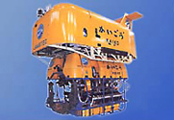
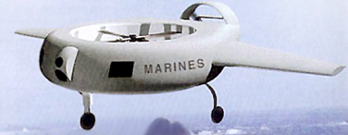

<!DOCTYPE html>
<html><head><title></title><meta charset="utf-8">
<link rel="stylesheet" type="text/css" href="linz.css"></head>
<body><p>&nbsp;</p><div class="center"><div class="size">
<div class="blue">1995</div><p>&nbsp;</p><div class="imagecenter">
<p>&nbsp;</p>
Am 24. Mrz 1995 taucht der japanische Roboter "Kaiko" 10911 Meter und 40 Zentimeter ins Challengertief des Marianengrabens hinab. Das US-Miltr stellt 'Cypher' vor, einen ferngesteuerten Flugroboter, der sich mit 50 Stundenkilometern bewegt, mit Tag- und Nachtsensoren, einem lasergesteuerten Entfernungsmesser und einer Hochleistungs-berwachungskamera ausger
</div></div><script src="/menu.js"></script></body></html>